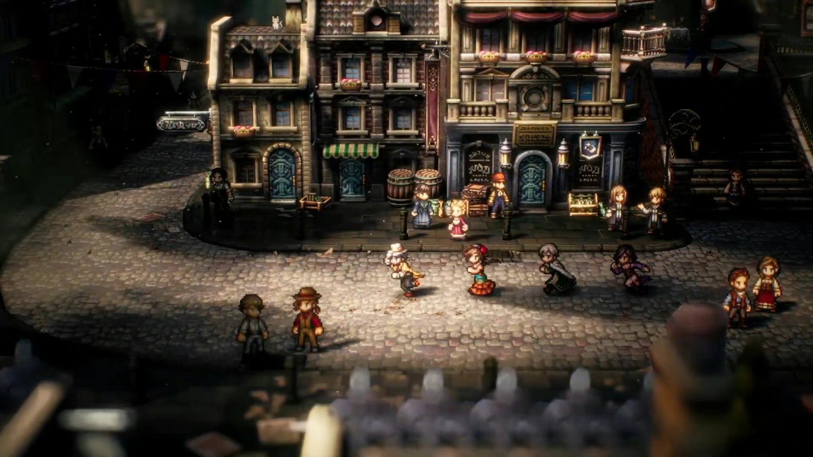
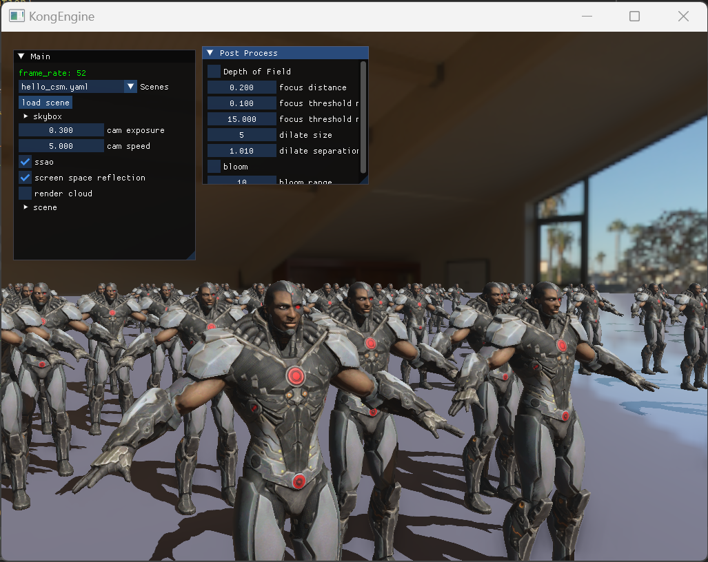
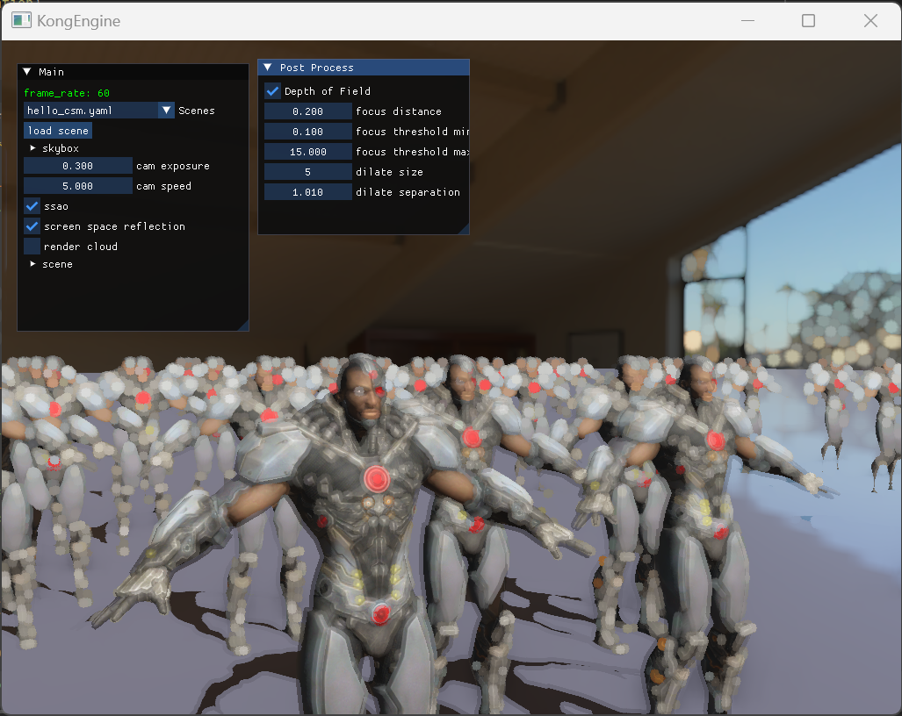
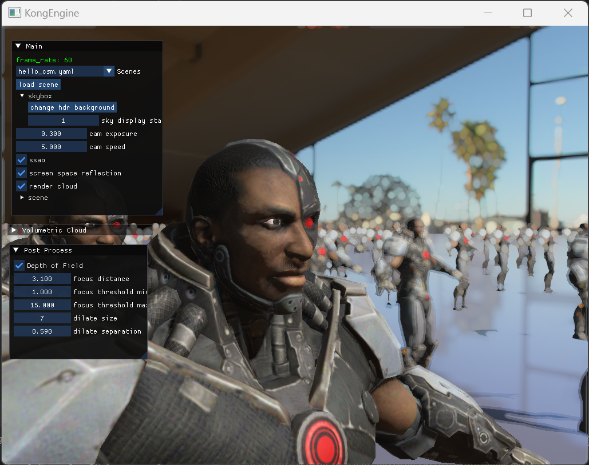
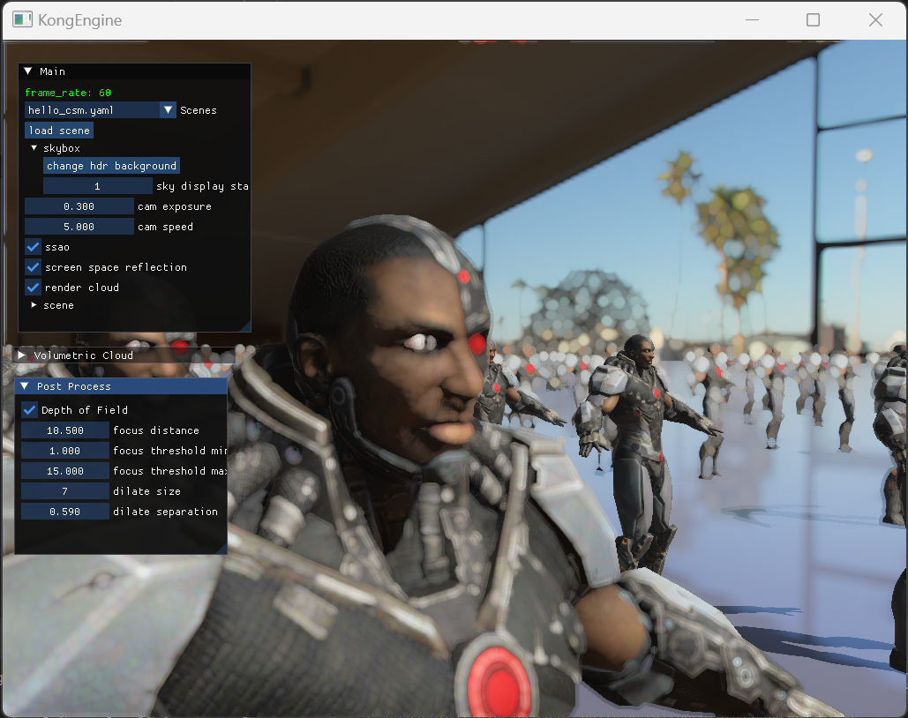

关于景深
景深是一个常在摄像领域出现的词，它一般指的是沿着摄像机或其他成像器的拍摄方向上，能够取得清晰图像的成像所测定的被摄物体前后距离范围。用大白话就是说，拥有浅景深的成像器拍摄出来的效果，是只有焦点附近的图像是清晰的，其他地方的图像都是模糊的；而拥有大景深则可以在离焦点很远的地方也能有清晰的图像。

有了景深效果的图像可以有重点的突出核心想要表达的内容，不仅仅在摄影摄像的领域有非常多的应用，在游戏领域内也是应用广泛，可以表现出很独特的风格化美术效果（如八方旅人的浅景深效果）。

下面我来介绍一种基础的景深效果实现，这个方法也在最近接入了KongEngine
渲染散景
浅景深的主要应用是通过调整不同焦距上物体的成像清晰程度来突出渲染画面的重点。清晰的部分我们已经掌握了，就是正常的将场景渲染出来，那不清晰的部分（或者叫做散景）也有不少的实现方式，一般是通过模糊算法来实现。
模糊的算法有很多种，比如box blur，gaussian blur等等，效果最好的是扩张模糊(dilate blur)，这也是我们会采取的方法。
扩张模糊（dilate blur)
扩张模糊它的主要方式，是在给定一个模糊的窗口下，取得这个窗口下的最亮的颜色记录下来，然后将这个最亮的颜色扩张到整个窗口。这样一来经过扩张模糊的画面会有一种亮晶晶，并且很柔和的效果，很适合作为散景的表现效果。
dilate blur的计算也比较简单，首先我们定义此次blur的窗口大小已经采样的间隔大小。
1
2
3
4
|
int size = 5;
float separation = 1.0;
|
在定义了窗口的尺寸之后，我们在窗口的范围内记录最亮的像素颜色，并保存下来。窗口的形状不限，可以是矩形，或者圆形。我们这里实现采取圆形的窗口。
1
2
3
4
5
6
7
8
9
10
11
12
13
14
15
16
17
18
19
20
21
22
23
24
25
26
27
28
29
30
31
32
33
34
35
36
|
vec2 tex_size = vec2(textureSize(scene_texture, 0).xy);
FragColor = texture(scene_texture, TexCoords);
if(size <= 0) return;
float mx = 0.0;
vec4 cmx = FragColor;
for(int i = -size; i <= size; ++i)
{
for(int j = -size; j <= size; ++j)
{
if(distance(vec2(i,j), vec2(0)) > size) continue;
vec2 sample_coord = TexCoords + vec2(i, j)*separation/tex_size;
if(sample_coord.x > 1.0 || sample_coord.x < 0.0 || sample_coord.y > 1.0 || sample_coord.y < 0.0)
continue;
vec4 c = texture(scene_texture, sample_coord);
float mxt = dot(c.rgb, vec3(0.3, 0.59, 0.11));
if(mxt > mx)
{
mx = mxt;
cmx = c;
}
}
}
|
这里我们计算最亮区域的方式是通过和一个目标颜色**(0.3, 0.59, 0.11)**来做点乘，当然也可以通过和其他的目标颜色，或者其他的方式来实现。
最后，我们得到窗口区域内最亮的颜色，我们的最终颜色是原本颜色和最亮颜色的差值。
1
2
3
4
5
6
|
float min_threshold = 0.1;
float max_threshold = 0.3;
FragColor.rgb = mix(FragColor.rgb, cmx.rgb, smoothstep(min_threshold, max_threshold, mx));
|
这里我们还是采用了一个上下限，尽量控制增亮的程度。
散景的效果
这里给出经过扩张模糊得到的散景效果。下面这张图是扩张模糊之前的效果。

下面这张图是扩张模糊之后的效果。

当然在实际的场景中，我们可能不会开这么大的扩散效果，此处只是作为对比。
结合场景
好了，现在我们有原本场景的渲染效果和扩散后的效果，实现最终的景深效果需要将这两者结合起来。我们需要一种方法来决定画面上哪些部分是需要采用清晰的图像，哪些是采用模糊的图像。
为了实现这个效果我们需要获得画面上每个点的深度，或者每个点的实际世界坐标。幸运的是，我们在实现延迟渲染的时候已经将这些存放到缓冲中去了，接下来就是实现景深效果了。
最终的代码如下：
1
2
3
4
5
6
7
8
9
10
11
12
13
14
15
16
17
18
19
20
21
22
23
24
25
26
27
28
29
| out vec4 FragColor;
in vec2 TexCoords;
uniform sampler2D scene_texture;
uniform sampler2D dilate_texture;
uniform sampler2D position_texture;
uniform float focus_distance = 3.0;
uniform vec2 focus_threshold;
float min_dist = focus_threshold.x;
float max_dist = focus_threshold.y;
void main()
{
vec4 focus_color = texture(scene_texture, TexCoords);
vec4 out_of_focus_color = texture(dilate_texture, TexCoords);
vec3 scene_position = texture(position_texture, TexCoords).xyz;
vec3 cam_pos = matrix_ubo.cam_pos.xyz;
float blur_amout = smoothstep(min_dist, max_dist, abs(focus_distance - distance(scene_position, cam_pos)));
FragColor = mix(focus_color, out_of_focus_color, blur_amout);
}
|
这段代码理解起来应该没有什么太大的难度。
最终效果
这里展示一下最终的效果。


上面两张图分别展示了不同焦点的景深的表现结果。可以明显看到不同景深效果的加入可以很容易的将画面上想要着重表达出来的部分勾勒出来。优秀的散景效果也能给画面增加不少美感（虽然我这个测试场景也没有什么美感可言…）。